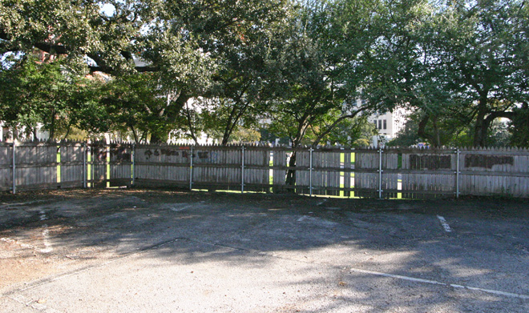

Monday, December the 1st, 2014
back to: title, date or indexes
Well, that was a slightly longer interval than intended. Now that the forthcoming paperback is almost ready, I really ought to buckle down to important Hooting Yardery again. One thing I have been doing while ignoring you lot is continuing my intermittent reading—begun last December—of Vincent Bugliosi's magisterial Reclaiming History. This, you may recall, is a preposterously huge tome—1,518 pages of dense text—devoted to the Kennedy assassination.
Two phrases are particularly evocative for hopeless JFK obsessives like me—the grassy knoll and the picket fence. So magisterial is Bugliosi's magisterial book that he even finds space, in a footnote, for a minor though shocking revelation. The fence in Dealey Plaza commonly referred to as the picket fence is not a picket fence at all! Dogged in his pursuit of absolutely everything anybody could ever possibly care to know about the events of that day in Dallas, Bugliosi conducted an interview by telephone on 18 August 2005 with Gary Mack, curator of the Sixth Floor Museum. Mr Mack told him: “In a picket fence, the wooden slats are not touching each other across the width of the fence. Here, they are. The fence is more properly referred to as a stockade fence.”
I had to go for a long walk to clear my head after reading that. I can only hope it has cleared sufficiently for me to resume bashing out the prose you lot have come to rely upon to keep you sane in a doolally universe.

The picket fence—not a picket fence